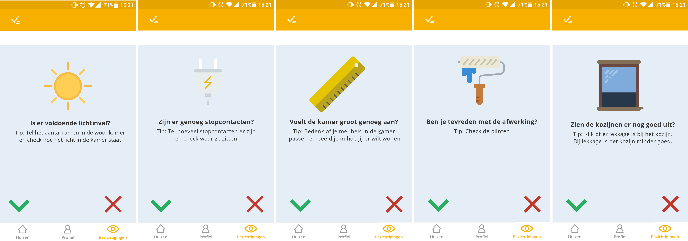
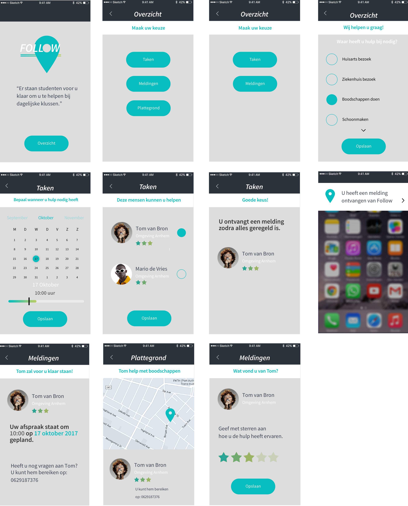

Wie ben ik?
Hoi! Ik ben Esther Greveling, 24 jaar en ik studeer Interaction Design aan de HAN in Arnhem.
Voor de mensen die mij niet kennen, ik ben soms wat druk, maar wel vol met enthousiasme. Ik werk graag in teamverband en ik wil graag het team motiveren. Ik ben resultaat gericht, maar dit mag niet ten koste gaan van de sfeer.
Naast mijn studie heb ik ook een aantal hobby's. Ik ben gek op fotograferen, met name natuur en dieren. Daarnaast rij ik paard. Ik vind het heerlijk om even mijn hoofd leeg te maken en buiten te zijn.
Wat doe ik?
Project Funda
Funda wilde de bezichteraars helpen bij het bezichtigen van een huis. Bezichteraars zien veel huizen en kunnen vaak maar één keer bezichtigen. De vraag van Funda was hoe de bezichteraars de bezichtigingen beter kunnen onthouden?
De oplossing die wij hebben bedacht was de app 'pocket ondersteuning'. Dit is een interactieve app waarin de bezichteraar de belangrijkste punten in kan voeren en wat zij als checklist bij de bezichtiging kunnen houden.
Naast de checklist kan de bezichteraar de huizen vergelijken op plus en minpunten van het huis. Op deze manier kan de bezichteraar de huizen nog helder voor de geest halen en vergelijken.
Ticketmatch
Tivoli Vredenburg te Utrecht gaf aan dat zij het voor mensen uit het buitengebied aantrekkelijker willen maken om concerten te bezoeken. Dit houdt in dat zij een groter bereik willen hebben dan allen Utrecht en omstreken. De vraag die zij aan ons stelden was: "Hoe kunnen mensen uit het buitengebied meer betrokken worden".
De oplossing die wij hebben bedacht was de app Ticketmatch. Deze app zorgt er voor dat mensen die naar het zelfde concert gaan samen kunnen reizen. De bezoekers kunnen zelf aangeven of zij vervoer zoeken, vervoer aanbieden of dat zij vol zitten. Zo hoeft niemand alleen te reizen.
Follow
Voor een zorginstelling kregen wij de opdracht om de mantelzorgers te ontlasten bij de zorg voor hun ouder. In deze casus ging het vooral om de bezoeken naar de huisarts.
De vraag aan ons was of wij een dienst konden ontwerpen, door middel van een applicatie, om met een (vaste) taxichauffeur de ouder naar de huisarts te brengen. Deze taxichauffeurs zijn studenten.
De oplossing die wij hebben bedacht, was een applicatie waar de ouder een taak in het huishouden uit kan besteden aan de student. Als de ouder dit niet zelf kan, kan de ouder hulp vragen aan de mantelzorger.
De ouder kan zelf aangeven welke taak er moet gebeuren en op welke dag en tijdstip dit moet gebeuren. Ook kan de ouder zelf kiezen welke student er mee gaat.
Via een GPS-tracker kan de mantelzorger de ouder volgen via zijn of haar telefoon of tablet. Zo heeft de mantelzorger wel de zekerheid, maar niet meer de lasten.
Neem contact op!